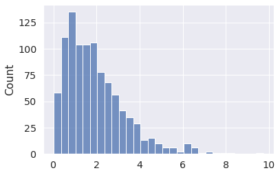
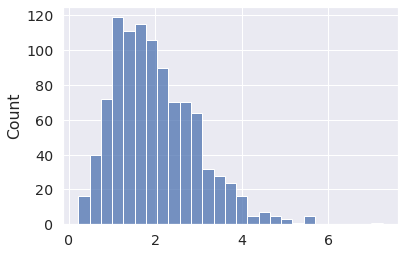
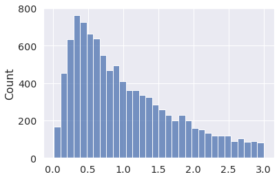
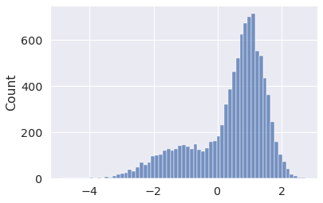
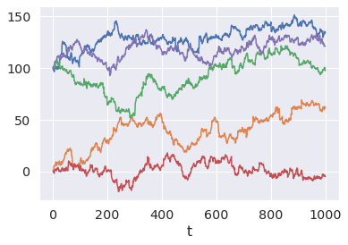
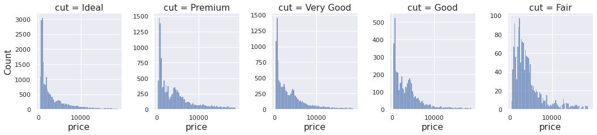
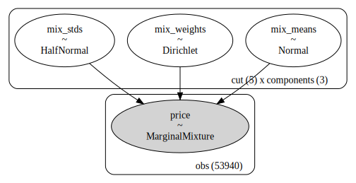
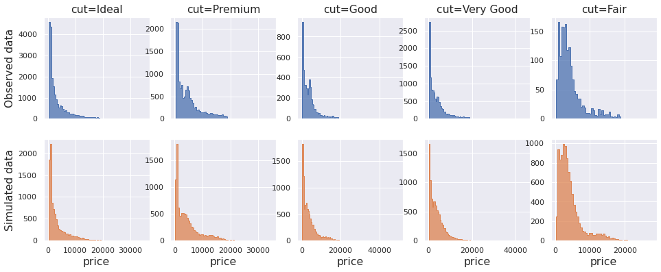
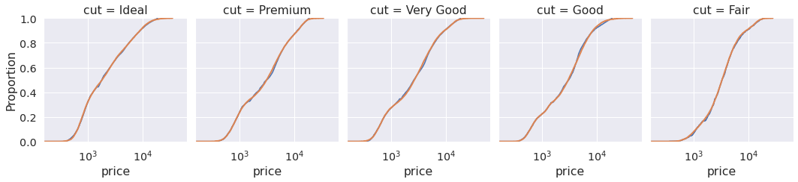

Image from Wikipedia
PyMC provids a great API for defining statistical models. When paired with its sampling algorithms, it becomes the ideal tool for conducting reliable and robust Bayesian inference.
Still, Bayesian inference is far from its only use case. PyMC models specify a highly structured data-generating process that can be very useful on its own. Applications include simulation for optimization routines, risk analysis, and research design, among many others.
PyMC comes with many user-friendly builtin distributions and meta-distributions which are cumbersome to write from scratch with NumPy or SciPy routines. These include Mixtures, Timeseries, Multivariate parametrizations, Censored and Truncated distributions, and pretty much anything you would would ever need when doing data simulation.
In this blog post we will give you a flavor for some of these, and show how we use them as part of a data modelling workflow!
import pymc as pm import seaborn as sns import matplotlib.pyplot as plt
SciPy has a lot of distributions, but they are often difficult to work with, due to their focus on loc-scale parametrizations.
PyMC tends to pick more intuitive parametrizations (and often offers multiple options).
For instance, in PyMC you can define a Gamma distribution using the shape/rate parametrization (which we call alpha and beta), and then take draws with the draw function.
x = pm.Gamma.dist(alpha=2, beta=1) x_draws = pm.draw(x, draws=1000, random_seed=1) sns.histplot(x_draws);

Or, perhaps more intuitively, using the mean/standard deviation parametrization (called mu and sigma).
x = pm.Gamma.dist(mu=2, sigma=1) x_draws = pm.draw(x, draws=1000, random_seed=2) sns.histplot(x_draws);

PyMC takes care of converting between equivalent parametrizations for the user.
Not all SciPy distributions allow NumPy-like broadcasting for their parameters. PyMC distributions always do!
import scipy.stats as st try: st.dirichlet([[1, 5, 100], [100, 5, 1]]).rvs() except ValueError as err: print(err)
Parameter vector 'a' must be one dimensional, but a.shape = (2, 3).
Ah well...
x = pm.Dirichlet.dist([[1, 5, 100], [100, 5, 1]]) pm.draw(x, random_seed=3)
array([[0.00173804, 0.0396383 , 0.95862366],
[0.94999365, 0.04176138, 0.00824496]])
Neither NumPy nor SciPy offer a pre-built truncated LogNormal distribution (last time I checked). They do offer a Truncated Normal, and you could exponentiate those to obtain Truncated LogNormal draws. But what if you wanted to sample some other truncated distribution?
PyMC can truncate any (pure univariate) distribution you throw at it, via the Truncated class.
x = pm.Truncated.dist(pm.Lognormal.dist(0, 1), upper=3) x_draws = pm.draw(x, draws=10_000, random_seed=4) sns.histplot(x_draws);

Or you can sample from Mixtures, using Mixture.
Here we sample from a Mixture of two Normals, with weights [0.3, 0.7],
meaning that 30% of the draws will come from the first component and 70% from the second (on average).
x = pm.Mixture.dist( w=[0.3, 0.7], comp_dists=[ pm.Normal.dist(-1, 1), pm.Normal.dist(1, 0.5), ], ) x_draws = pm.draw(x, draws=10_000, random_seed=5) sns.histplot(x_draws);

Or Random walks... with mixture initial distributions? Sure.
init_dist = pm.Mixture.dist( w=[0.3, 0.7], comp_dists=[ # Why? Because we can! pm.Beta.dist(1, 1), pm.Normal.dist(100, 0.5), ] ) x = pm.RandomWalk.dist( init_dist=init_dist, innovation_dist=pm.StudentT.dist(nu=4, mu=0, sigma=1), steps=1000, ) x_draws = pm.draw(x, draws=5, random_seed=6) for x_draw in x_draws: plt.plot(x_draw) plt.xlabel("t");

You can also draw multiple non-independent variables easily.
In this example we first sample a categorical index variable, which is then used to select an entry from a vector of 3 Normals with means [-100, 0, 100], respectively.
We can retrieve both the index and selected Normal draws via draw.
idx = pm.Categorical.dist(p=[.1, .3, .6]) x = pm.Normal.dist(mu=[-100, 0, 100], sigma=1)[idx] idx_draws, x_draws = pm.draw([idx, x], draws=5, random_seed=7) idx_draws, x_draws
(array([2, 0, 1, 1, 0]),
array([ 99.56070737, -97.86364272, -1.91664666, -0.51318227,
-101.0769092 ]))
Here we first sample a Poisson variable. This value then determines how many draws to take from a Gamma variable that is finally summed.
n_events = pm.Poisson.dist(5) emissions = pm.Gamma.dist(mu=10, sigma=2, shape=n_events) pm.draw([n_events, emissions.sum()], draws=3, random_seed=8)
[array([ 4, 10, 5]), array([36.44587888, 99.99521681, 57.83917302])]
Sometimes you have a rough idea of what the data looks like, but you don't know how to specify it.
This could happen in a parameter recovery study, where you want to simulate covariates that are somewhat "realistic". Maybe their marginals match an observed dataset or they show some level of covariance. But you may not know exactly what parameters to use.
The good news is that PyMC can also do inference (that's its main goal after all)!
Let's say we have the following marginal data, and we want to simulate something that behaves roughly like it.
df = sns.load_dataset("diamonds") fg = sns.displot(data=df, x="price", col="cut", facet_kws=dict(sharey=False), height=3.5, aspect=0.85); for ax in fg.axes.ravel(): ax.tick_params(axis="both", labelsize=11)

Looks like a positive distribution, maybe multimodal. Perhaps a LogNormal mixture?
What about the parameters for the components, what should be the mixture weigths? Let's make PyMC infer them!
import pandas as pd import numpy as np cut_idxs, cut_labels = pd.factorize(df["cut"]) cut_idxs, cut_labels
(array([0, 1, 2, ..., 3, 1, 0]),
CategoricalIndex(['Ideal', 'Premium', 'Good', 'Very Good', 'Fair'], categories=['Ideal', 'Premium', 'Very Good', 'Good', 'Fair'], ordered=False, dtype='category'))
Let's assume the price for each of the 5 cuts can be modeled by a mixture of 3 LogNormal distributions. That will be 5 * 3 = 15 means and 15 standard deviations. We will also need 15 mixture weights. Sounds like many parameters, but we have much more data.
f"rows={df.shape[0]}"
'rows=53940'
Let's create a PyMC model, with vague priors and fit the most likely parameter combination that could have generated the data.
coords = { "cut": cut_labels.codes, "components": (0, 1, 2), "obs": range(len(df)), } with pm.Model(coords=coords) as m: # Priors for the weights, means and standard deviations mix_weights = pm.Dirichlet("mix_weights", np.ones((5, 3)), dims=("cut", "components")) mix_means = pm.Normal("mix_means", mu=[7, 8, 9], sigma=3, dims=("cut", "components")) mix_stds = pm.HalfNormal("mix_stds", sigma=2, dims=("cut", "components")) # Distribution of the data # We use numpy advanced indexing to broadcast the 5 mixtures parameters # and weights into the long form shape of the data price = pm.Mixture( "price", w=mix_weights[cut_idxs], # You can pass a single distribution to Mixture, # in which case the last dimensions correspond to the mixture components. comp_dists=pm.LogNormal.dist(mu=mix_means[cut_idxs], sigma=mix_stds[cut_idxs]), observed=df["price"], dims="obs", )
That's a bit complicated... but not too bad once you write a couple of PyMC models. PyMC comes with a whole set of utilities to help you define complex statistical models.
In the example above we used coords, to specify the shape of our parameters with human-readable labels.
We can also request a graphical representation of our model:
pm.model_to_graphviz(m)

Looks about right. And here are the most likely parameters according to find_MAP:
with m: fit = pm.find_MAP(include_transformed=False) fit
{'mix_means': array([[6.66074039, 7.75610166, 9.05369536],
[6.72625732, 8.39101105, 9.55073404],
[6.43443448, 8.29902563, 7.11347194],
[6.47404918, 8.18681784, 9.52971883],
[6.91160121, 8.16400639, 9.50047371]]),
'mix_weights': array([[0.35500674, 0.43518759, 0.20980567],
[0.32025714, 0.59956718, 0.08017567],
[0.21574635, 0.73892949, 0.04532416],
[0.26608238, 0.68359 , 0.05032761],
[0.13718139, 0.78682301, 0.0759956 ]]),
'mix_stds': array([[0.29090793, 0.58885309, 0.42603866],
[0.32267874, 0.61074076, 0.17280056],
[0.26029962, 0.68052945, 0.09724909],
[0.28147658, 0.69736908, 0.18833131],
[0.35619133, 0.52964347, 0.19005135]])}
Now that we have a set of parameter values, we can take draws from the distribution of interest. Hopefully it will resemble our data.
cut_labels.codes
array([0, 1, 3, 2, 4], dtype=int8)
cut_idxs = cut_labels.codes price = pm.Mixture.dist( w=fit["mix_weights"][cut_idxs], comp_dists=pm.LogNormal.dist( mu=fit["mix_means"][cut_idxs], sigma=fit["mix_stds"][cut_idxs] ), ) # Each draw returns one price for each cut category pm.draw(price, random_seed=9)
array([ 681.86652441, 1559.814205 , 3460.20197464, 3291.09521261,
2400.54237695])
draws = pm.draw(price, draws=10_000, random_seed=10)
fig, ax = plt.subplots(2, 5, figsize=(16, 6), sharex="col") for col in range(5): sns.histplot(data=df.query(f"cut=='{cut_labels[col]}'"), x="price", binwidth=500, element="step", ax=ax[0, col]) sns.histplot(data=draws[:, col], binwidth=500, element="step", ax=ax[1, col], color="C1") if col == 0: ax[0, 0].set_ylabel("Observed data") ax[1, 0].set_ylabel("Simulated data"); else: ax[0, col].set_ylabel("") ax[1, col].set_ylabel("") ax[0, col].set_title(f"cut={cut_labels[col]}") ax[1, col].set_xlabel("price") for axi in ax.ravel(): axi.tick_params(axis="both", labelsize=11);

The marginal simulated histograms do resemble those from the original dataset.
Another way of checking their similarity is to look at the empirical CDF. The two lines should look alike for distributions that are similar.
r = sns.displot(data=df, x="price", col="cut", kind="ecdf", log_scale=True, height=3.5, aspect=0.85) for i in range(5): sns.ecdfplot(draws[:, i], ax=r.axes[0, i], color="C1", lw=2)

Looks close enough!
If it didn't, we could go back to the Model and try something else. Maybe more components, or different distribution families...
But careful, if you do this enough times, you may end up as a data modelling practitioner!
In the examples above we used the handy draw function.
Under the hood, this function creates a compiled function that takes draws from your specified variables, seeds it,
and then calls it multiple times in a Python loop.
If you are writing performance-critical code,
you should avoid calling draw in a loop,
as it will recompile the same function every time it is called.
Instead you can compile the underlying random function directly with compile_pymc and reuse it whenever needed.
The internals of draw are pretty straightforward.
from pymc.pytensorf import compile_pymc x = pm.Normal.dist() fn = compile_pymc(inputs=[], outputs=x, random_seed=11) fn(), fn()
(array(-0.10568235), array(-0.6541993))
Secondly, if you need to take many draws from the same distribution, it's better to define it with the final shape and call the function only once. In the examples above we never did this!
This way, the random number generation can be vectorized.
x = pm.Normal.dist(shape=(2,)) fn = compile_pymc(inputs=[], outputs=x, random_seed=11) fn()
array([-0.10568235, -0.6541993 ])
To better understand PyMC shapes, check out this page.
In this blog post we showed how PyMC can be used as a powerful replacement for NumPy and SciPy when writing structured random generation routines.
We also hinted at how the same code can be reused for both simulation and inference in the last example. If you go a bit further, you can start doing predictions based on your estimated statistical model. This is, in a nutshell, what model based data science is all about!
If you are a data scientist, doing data simulation, we hope you give PyMC a try!
If you are interested in seeing what we at PyMC Labs can do for you, then please email info@pymc-labs.com. We work with companies at a variety of scales and with varying levels of existing modeling capacity. We also run corporate workshop training events and can provide sessions ranging from introduction to Bayes to more advanced topics.